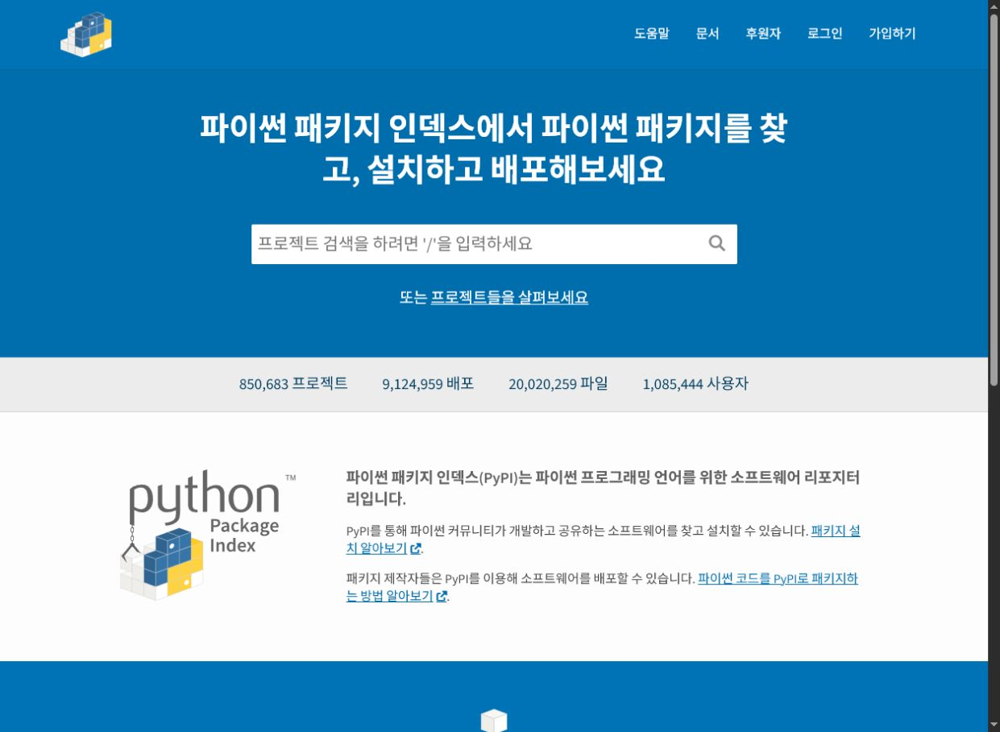
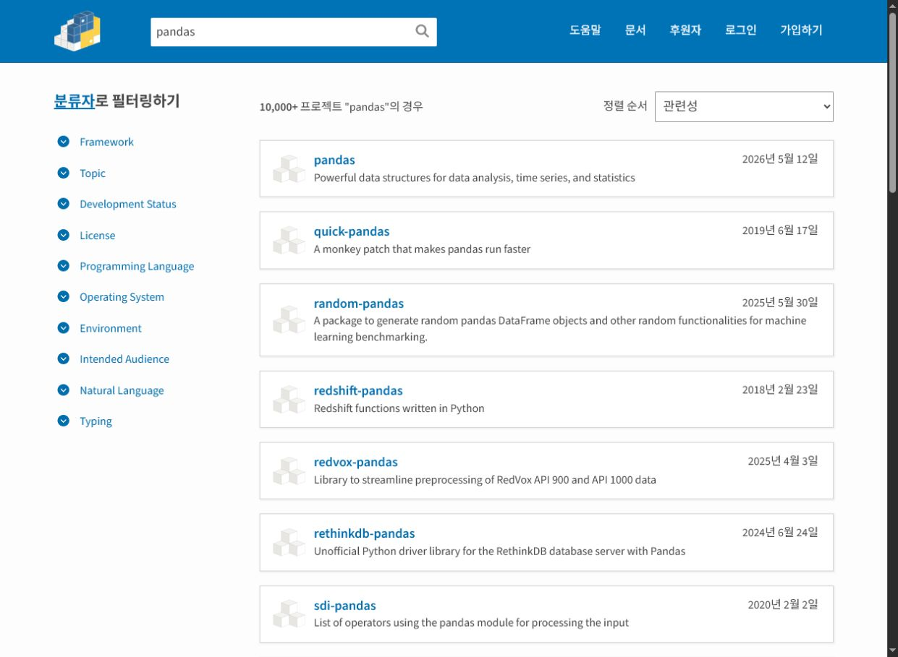
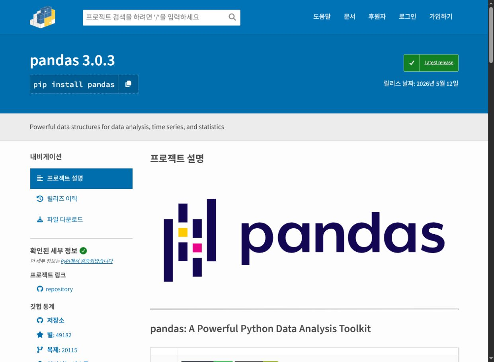
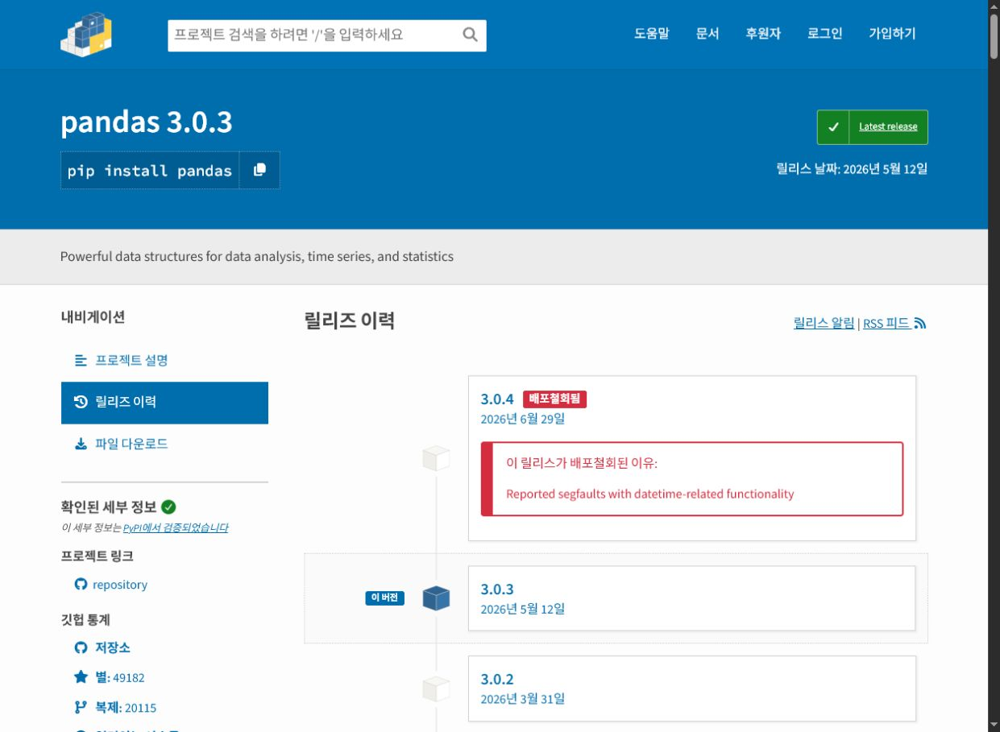
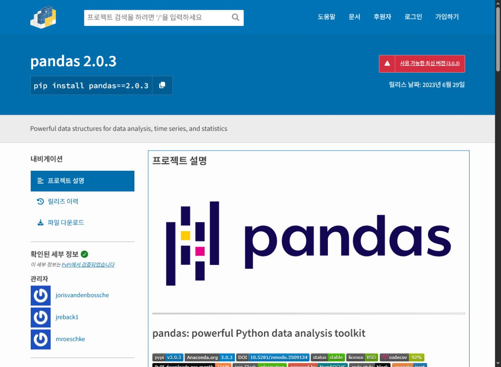
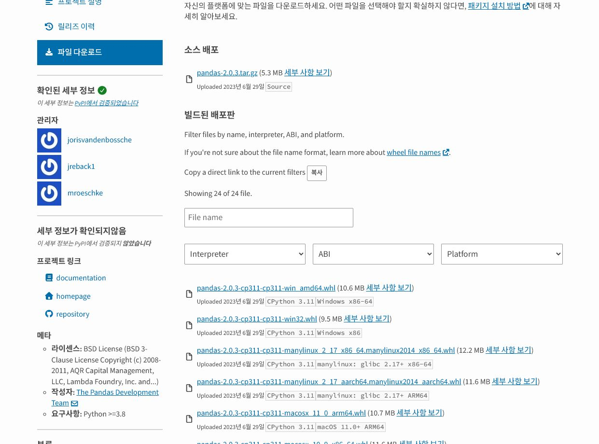
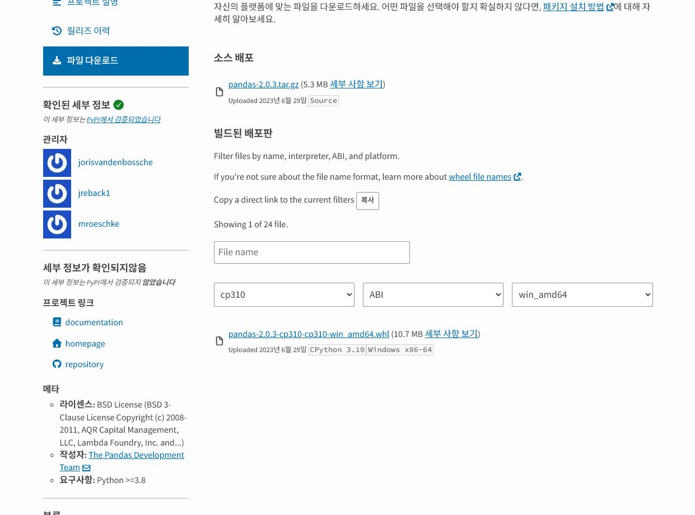
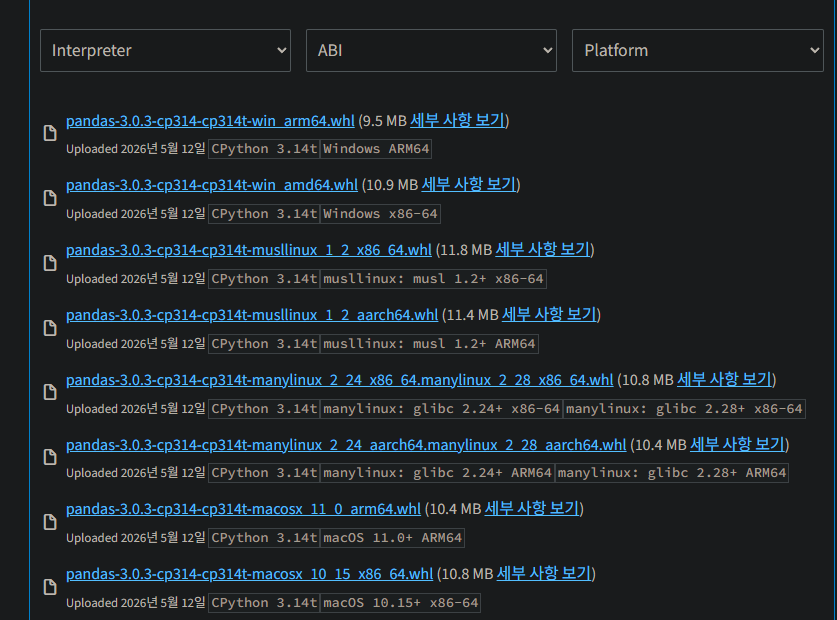
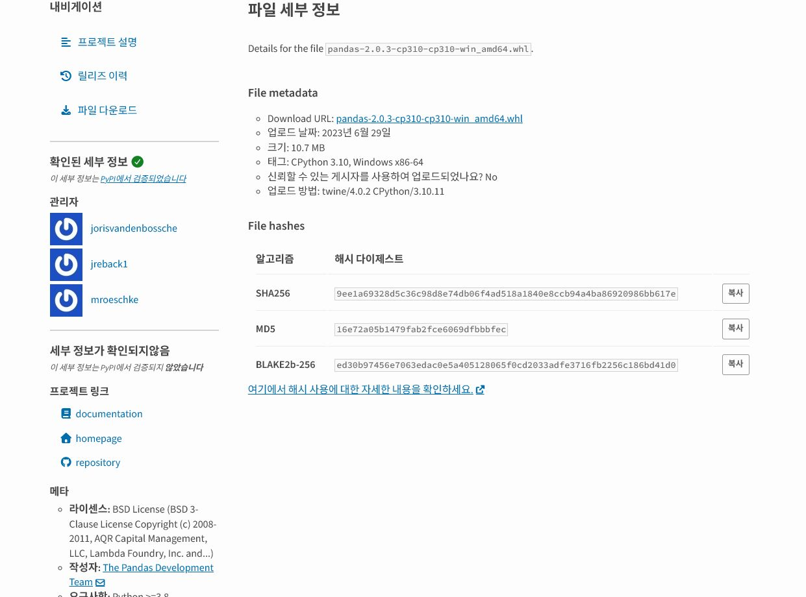

저는 프로그래밍 전공자가 아니라 이학박사로 제조 대기업에 입사해 공정 개선과 신공법 검토를 맡았습니다. 2024년 생성형 AI를 업무에 쓰기 시작했을 때 제 손에 있던 것은 공정 판단 기준과 실행할 문제였고, Python 문법은 익숙하지 않았습니다. 그래서 여러 CSV의 열을 맞추는 것처럼 입력과 정답을 눈으로 확인할 수 있는 일부터 잘게 나눴습니다.
2025년부터 여러 서비스를 집중적으로 사용하면서 작업 화면도 구체적으로 바뀌었습니다. LTE 태블릿에서 회사 정보가 빠진 가상 입력과 요구사항을 전달하고, Acode에서 들여쓰기와 누락 함수를 확인한 뒤, 사내 PC에서는 승인된 절차로 반입한 코드만 실행했습니다. 오류가 나면 화면을 통째로 보내는 대신 Python 버전, 실행 명령, 식별정보를 제거한 오류 전문을 다시 적었습니다.
이 흐름은 처음부터 매끄럽지 않았습니다. 회사 코드의 외부 반출을 보안 부서에서 지적받고 재발 방지 서약을 한 뒤에야, 외부 반출은 금지되고 회사 정보가 없는 외부 자료의 사내 반입은 확인된 절차 안에서 가능하다는 경계를 다시 잡았습니다. 그 뒤 모델의 답변보다 먼저 데이터가 어느 방향으로 움직이는지 확인하는 순서로 바꿨습니다.
첫 자동화는 입력 파일 하나, 출력 표 하나, 사람이 확인할 합계 하나로 제한하세요. 생성형 AI가 공정 지식을 대신해 주지는 않지만, 이미 알고 있는 판단을 입력·제외 조건·기대 출력으로 나누면 코드 초안을 만드는 속도는 높일 수 있습니다.
코딩을 모르던 공정 엔지니어가 어디서 시작했나
비개발 엔지니어에게는 여러 CSV의 열 이름을 맞추고, 날짜별 통계를 계산하고, 확인용 그래프를 저장하는 작은 Python 스크립트가 적당한 시작점입니다. 공정 담당자는 어느 설비를 묶을지, 어떤 lot을 제외할지, 이상값을 왜 보존해야 하는지 이미 알고 있습니다. 생성형 AI에는 그 판단을 입력 조건, 제외 규칙, 기대 출력으로 풀어 전달해야 합니다.
공정 조건은 알고 있지만 Python 문법을 모르는 상태는, 공정 recipe는 알고 있는데 장비 UI를 처음 보는 것과 비슷했습니다. 버튼 위치는 모르지만 무엇을 해야 하는지는 압니다. AI에게 필요한 것은 “좋은 코드 하나 만들어줘”가 아니라 “입력 파일의 열은 무엇이고, 어떤 행을 제외하며, 결과 표는 어떤 모양이어야 하는지”였습니다.
| 현장 문제 | AI에 줄 구체 조건 | 사람이 확인할 것 |
|---|---|---|
| 여러 CSV 병합 | encoding, 열 이름, 파일명에서 날짜 추출 규칙 | 누락 파일 수와 총 행 수 |
| 설비별 추세 | equipment/chamber 구분, 시간 단위, 평균·중앙값 | 정비·recipe 변경 구간 |
| 이상 조건 표시 | 임계값, 연속 발생 횟수, 제외 조건 | 정상적인 제품·recipe 차이를 오탐하지 않는지 |
| 보고서용 그림 | 축 단위, 범례, 기준선, 저장 해상도 | 그래프가 원자료를 왜곡하지 않는지 |
제조업 보안 제약이 작업 방식을 바꿨다
제가 실제로 사용한 방식은 자동으로 wheelhouse를 만드는 방법이 아니었습니다. PyPI에서 필요한 모듈을 하나씩 찾고, 회사 PC에 반입 가능한 폴더에 저장한 다음 직접 설치했습니다. 문제는 주 패키지 하나만 받으면 끝나는 게 아니었다는 점입니다. Python 버전, Windows bit 수, 패키지 버전뿐 아니라 그 패키지가 요구하는 의존 모듈과 다시 그 아래 의존성까지 맞춰야 했습니다.
패키지 검색: PyPI 공식 사이트 바로가기 (pypi.org)
PyPI 메인 화면부터 호환 파일을 찾는 실제 순서
다운로드를 시작하기 전에 Python 구현체·버전, 운영체제, CPU 구조, 32/64비트를 확인합니다. Python 3.10.1의 마지막 자리인 .1은 wheel 태그에 보통 나타나지 않고 CPython 3.10 전체가 cp310으로 표시됩니다. 가장 확실한 기준은 대상 PC에서 python -m pip debug --verbose를 실행했을 때 나오는 compatible tags 목록입니다.
python --version
python -c "import sys, platform, struct; print(sys.implementation.name); print(platform.system()); print(platform.machine()); print(struct.calcsize('P') * 8)"
python -m pip debug --verbose1단계. PyPI 메인 화면에서 패키지 이름을 검색합니다
pypi.org에 들어가면 중앙에 큰 검색창이 있습니다. 여기에 설치하려는 모듈의 정확한 이름을 입력합니다. 예시는 pandas입니다. 이름을 모르면 생성형 AI에 먼저 후보를 물어볼 수 있지만, 최종 패키지명과 배포자는 PyPI에서 확인합니다.

2단계. 검색 결과에서 정확한 프로젝트를 고릅니다
검색 결과에는 이름이 비슷한 프로젝트가 많이 나옵니다. 아래 화면처럼 pandas, quick-pandas, random-pandas는 서로 다른 패키지입니다. 정확한 이름, 설명, 최근 배포일을 보고 원래 찾던 프로젝트 카드를 누릅니다. 철자가 비슷하다는 이유로 아무 패키지나 받으면 안 됩니다.

3단계. 프로젝트 페이지에서 현재 버전과 메뉴를 확인합니다
프로젝트 상단에는 현재 기본 버전과 설치 명령이 보입니다. 왼쪽에는 릴리즈 이력과 파일 다운로드 메뉴가 있습니다. 회사 Python이 오래된 버전이라면 최신 패키지가 호환되지 않을 수 있으므로 곧바로 파일 다운로드를 누르지 말고 릴리즈 이력을 먼저 봅니다.

4단계. 릴리즈 이력에서 사용할 버전을 정합니다
버전 숫자가 가장 크다고 무조건 선택하지 않습니다. 배포철회됨은 알려진 문제가 있어 내려간 버전이고, 사전 릴리즈는 운영 사용 전 검증이 더 필요한 후보 버전입니다. 대상 Python 지원 범위, 회사에서 검증한 다른 패키지와의 조합, 배포철회 여부를 확인한 뒤 버전 번호를 누릅니다. 이 글에서는 설명을 위해 Python 3.10 wheel이 있는 2.0.3을 선택했습니다.

5단계. 선택한 버전이 맞는지 다시 확인합니다
상단 제목이 pandas 2.0.3으로 바뀌고 설치 예시도 pip install pandas==2.0.3처럼 고정 버전을 보여주는지 확인합니다. 여기서 왼쪽 파일 다운로드를 누릅니다. 상단에 “사용 가능한 최신 버전” 경고가 떠도, 호환성 검토를 거쳐 과거 버전을 의도적으로 선택한 것이라면 잘못 들어온 것이 아닙니다.

6단계. 소스 배포판과 빌드된 배포판을 구분합니다
소스 배포의 .tar.gz는 로컬에서 컴파일해야 할 수 있습니다. 컴파일러와 개발 헤더를 추가하기 어려운 폐쇄망 Windows PC라면, 같은 버전의 빌드된 배포판인 .whl이 있는지 먼저 찾는 편이 수월합니다. 파일이 많아 보여도 모두 설치하는 것이 아니라 내 환경과 일치하는 하나만 고릅니다.

7단계. Python과 운영체제 필터로 후보를 하나로 줄입니다
예시 회사 PC가 CPython 3.10.1, Windows 64비트 x86-64라면 Interpreter에서 cp310, Platform에서 win_amd64를 선택합니다. ABI는 우선 비워도 두 조건으로 하나만 남을 수 있습니다. 결과 파일의 회색 설명에 CPython 3.10 / Windows x86-64가 표시되는지 다시 읽습니다.

pandas-2.0.3-cp310-cp310-win_amd64.whl 하나가 남았습니다. 출처: PyPI pandas 2.0.3 파일 목록, 2026-07-14 캡처.첨부 화면으로 읽어보는 고급 예시: cp314t는 무엇인가
아래는 사용자가 직접 제공한 pandas 3.0.3 파일 목록 화면입니다. 한 버전 안에도 Windows ARM64·x86-64, musl Linux, glibc Linux, macOS Apple Silicon·Intel 파일이 따로 있고, 모두 cp314-cp314t가 붙어 있습니다. 이때 앞의 cp314는 CPython 3.14 interpreter, 뒤의 cp314t는 free-threaded CPython 3.14 ABI를 뜻합니다. 끝의 t는 선택적 GIL 비활성화 빌드용이므로 일반 CPython 3.14의 cp314-cp314 wheel과도 구분해야 합니다.

| 파일명 끝부분 | 대상 환경 | Python 3.10.1 Windows PC에서 선택? |
|---|---|---|
cp314-cp314t-win_arm64 | Free-threaded CPython 3.14, Windows ARM64 | 아니요. Python 버전·ABI·CPU가 모두 다릅니다. |
cp314-cp314t-win_amd64 | Free-threaded CPython 3.14, Windows x86-64 | 아니요. 운영체제와 CPU는 맞아도 Python 3.10 및 일반 ABI와 맞지 않습니다. |
musllinux_1_2_x86_64 | musl libc 1.2 이상을 사용하는 x86-64 Linux | 아니요. Windows 파일이 아닙니다. |
musllinux_1_2_aarch64 | musl libc 1.2 이상을 사용하는 ARM64 Linux | 아니요. OS와 CPU가 모두 다릅니다. |
manylinux_2_24_x86_64.manylinux_2_28_x86_64 | 파일명에 복수 manylinux 플랫폼 태그를 선언한 glibc x86-64 Linux wheel | 아니요. Linux용이며 최종 판단은 해당 Linux의 pip compatible tags로 합니다. |
manylinux_*_aarch64 | glibc 기반 ARM64 Linux | 아니요. Windows x86-64와 다릅니다. |
macosx_11_0_arm64 | macOS 11 이상, Apple Silicon | 아니요. Mac ARM용입니다. |
macosx_10_15_x86_64 | macOS 10.15 이상, Intel Mac | 아니요. Mac Intel용입니다. |
회사 PC가 일반 CPython 3.10.1 64비트 Windows라면 화면에 보이는 파일은 전부 선택 대상이 아닙니다. 같은 Windows x86-64라는 이유만으로 cp314t-win_amd64를 받으면 안 됩니다. Python tag, ABI tag, platform tag 세 칸이 모두 맞아야 합니다.
# free-threaded Python 빌드인지 확인
python -VV
python -c "import sysconfig; print(sysconfig.get_config_var('Py_GIL_DISABLED'))"
# 1이면 free-threaded 지원 빌드, None 또는 0이면 해당 빌드가 아님
# 일반 Python 3.10.1에서는 cp314t 파일을 선택하지 않습니다.8단계. 세부 사항에서 크기·태그·SHA256을 확인합니다
파일 오른쪽의 세부 사항 보기를 누릅니다. 다운로드 URL, 업로드 날짜, 크기, CPython·운영체제 태그와 SHA256을 확인할 수 있습니다. 파일을 사내로 반입한 뒤 PowerShell의 Get-FileHash 결과와 PyPI SHA256이 같은지 비교하면 전송 중 손상이나 다른 파일 선택을 잡을 수 있습니다.

Get-FileHash .\pandas-2.0.3-cp310-cp310-win_amd64.whl -Algorithm SHA256pandas-2.0.3-cp310-cp310-win_amd64.whl에서 2.0.3은 pandas 버전, cp310은 CPython 3.10용 interpreter·ABI, win_amd64는 64비트 Windows용이라는 뜻입니다. 회사 PC가 Python 3.10.1 64비트라면 이 조합을 찾았습니다. 같은 pandas 파일이어도 cp311, win32, manylinux 파일을 받으면 설치되지 않습니다.
| 부분 | 예시 | 뜻과 판단 기준 |
|---|---|---|
| 배포명 | pandas | PyPI 프로젝트 이름입니다. 비슷한 이름의 다른 프로젝트와 혼동하지 않습니다. |
| 버전 | 2.0.3 | 선택한 릴리스와 정확히 같아야 합니다. 의존성 요구 범위도 이 버전을 기준으로 봅니다. |
| Python 태그 | cp310 | CPython 3.10용입니다. py3는 일반 Python 3, cp311은 CPython 3.11을 뜻합니다. |
| ABI 태그 | cp310 | CPython 3.10 ABI에 맞춘 바이너리입니다. abi3는 여러 CPython 3 버전에서 쓸 수 있는 제한 ABI, none은 별도 바이너리 ABI가 없다는 뜻입니다. |
| 플랫폼 태그 | win_amd64 | 64비트 x86 Windows용입니다. 운영체제와 CPU 구조가 모두 맞아야 합니다. |
| 태그 | 맞는 환경 | 주의할 점 |
|---|---|---|
win_amd64 | Windows x86-64, 일반적인 64비트 Intel·AMD PC | amd64는 AMD CPU 전용이라는 뜻이 아닙니다. |
win32 | 32비트 Windows Python | Windows가 64비트여도 Python 자체가 32비트면 이쪽일 수 있습니다. |
win_arm64 | Windows ARM64 | x86-64 PC와 호환되지 않습니다. |
manylinux_*_x86_64 | 호환 glibc 조건을 만족하는 64비트 x86 Linux | Windows에서는 설치할 수 없습니다. |
manylinux_*_aarch64 | 64비트 ARM Linux | x86-64 Linux와도 다른 파일입니다. |
macosx_*_x86_64 | Intel Mac | 태그 안 숫자는 최소 macOS 배포 기준을 나타냅니다. |
macosx_*_arm64 | Apple Silicon Mac | Intel Mac용과 구분합니다. |
any | 운영체제 독립적인 순수 Python 패키지 | 보통 py3-none-any.whl 형태지만 지원 Python 범위는 별도 확인합니다. |
파일명을 눈으로 추측하는 것보다 대상 회사 PC의 python -m pip debug --verbose에서 출력되는 compatible tag와 대조하는 편이 안전합니다. 다운로드하려는 wheel 태그가 그 목록에 없으면 설치 후보에서 제외합니다. 패키지 페이지의 Requires: Python 조건도 함께 만족해야 합니다.
먼저 Claude나 GPT에 “Windows 64비트, CPython 3.10.1에서 pandas 2.0.3을 오프라인 설치하려 한다”고 알려주고, 직접 의존성과 하위 의존성, 호환 범위, 권장 고정 버전, wheel 파일명, 설치 순서를 표로 만들어 달라고 요청했습니다. 그 목록을 작업 체크리스트로 삼아 PyPI에서 각 버전을 하나씩 검색하고 다운로드했습니다. AI가 알려준 이름과 버전을 그대로 믿지는 않았습니다. 각 패키지의 PyPI 메타데이터와 파일 목록에서 Python 요구 버전과 wheel 태그를 다시 확인했습니다.
환경: Windows 64-bit / CPython 3.10.1 / 인터넷 차단
목표: pandas 2.0.3 오프라인 설치
다음을 표로 정리해줘.
1. 직접 의존성과 하위 의존성
2. Python 3.10 호환 버전 범위와 권장 고정 버전
3. 받아야 할 Windows 64-bit wheel 파일명
4. 하위 의존성부터 설치하는 순서
5. PyPI에서 반드시 다시 확인할 항목| 확인 대상 | PyPI 공식 메타데이터에서 확인한 조건 | 실제 행동 |
|---|---|---|
| pandas 2.0.3 | Python 3.8 이상, CPython 3.10 Windows 64비트 wheel 제공 | cp310-cp310-win_amd64 파일 선택 |
| numpy | Python 3.10 이상에서는 1.21.0 이상 요구 | 3.10용 numpy wheel과 선택 버전의 상한 호환성 재확인 |
| python-dateutil | 2.8.2 이상 요구 | 해당 버전의 하위 의존성인 six까지 확인 |
| pytz | 2020.1 이상 요구 | 호환 wheel 또는 범용 배포 파일 확인 |
| tzdata | 2022.1 이상 요구 | 선택 버전을 별도 다운로드 |
설명용 pandas 예시에서는 하위 의존성을 먼저 준비해 six → python-dateutil → pytz·tzdata → numpy → pandas 순서로 설치할 수 있습니다. 각 파일은 python -m pip install --no-index 파일명.whl로 설치하고, 오류가 나면 누락된 의존성과 호환 태그를 다시 확인합니다. 실제 순서는 선택한 버전의 메타데이터에 따라 달라지므로 이 목록을 고정 절차로 쓰면 안 됩니다. 저는 개별 파일과 설치 결과를 폴더에 남겨 어느 버전에서 충돌했는지 추적했습니다.
# 모든 파일을 같은 승인 폴더에 모은 뒤, 아래 의존성부터 순서대로 설치
python -m pip install --no-index .\six-버전-py2.py3-none-any.whl
python -m pip install --no-index .\python_dateutil-버전-py2.py3-none-any.whl
python -m pip install --no-index .\pytz-버전-py2.py3-none-any.whl
python -m pip install --no-index .\tzdata-버전-py2.py3-none-any.whl
python -m pip install --no-index .\numpy-버전-cp310-cp310-win_amd64.whl
python -m pip install --no-index .\pandas-2.0.3-cp310-cp310-win_amd64.whl
# 설치 후 누락·충돌과 실제 import 확인
python -m pip check
python -c "import pandas, numpy; print(pandas.__version__, numpy.__version__)"PyPI 화면에서 의존성 문구를 찾기 어렵다면 공식 JSON 메타데이터 주소 https://pypi.org/pypi/패키지명/버전/json의 requires_python과 requires_dist를 확인할 수 있습니다. 이 글의 예시는 pandas 2.0.3 공식 JSON 메타데이터입니다. 여기서 확인한 직접 의존성 각각에 대해 같은 절차를 반복해야 하위 의존성까지 닫힙니다.
패키지 파일을 사내로 가져오는 과정도 회사가 승인한 반입 절차, 악성코드 검사, 라이선스 검토, hash 확인을 거쳤습니다. 특히 사내 데이터, 파일명, 설비명, recipe 값, 수율, alarm 이력은 프롬프트 예시로도 외부 서비스에 보내지 않았습니다. 실제 구조를 설명해야 할 때는 TOOL_A, RECIPE_X, VALUE_1처럼 구조만 남긴 가상 예제로 바꿨습니다.
처음부터 외부 반출과 내부 반입의 경계를 정확히 알고 시작한 것은 아닙니다. 회사 코드가 외부로 나간 점을 보안부서에서 지적받았고 재발 방지 서약도 했습니다. 이후 보안부서에 허용 범위를 다시 확인했습니다. 당시 확인받은 기준은 사내 코드와 정보의 외부 반출은 금지되지만, 회사 정보가 들어 있지 않은 외부의 일반 코드는 승인된 절차를 거쳐 사내로 반입할 수 있다는 것이었습니다. 그 뒤로는 사내 코드나 데이터를 외부 AI에 보내지 않았습니다. 외부에서는 범용 코드와 가상 예제만 작성하고, 확인된 반입 절차에 따라 사내로 가져왔습니다.
LTE 태블릿, 개인 이메일, 외부 생성형 AI 사용은 회사마다 금지되거나 별도 승인이 필요할 수 있습니다. “파일 첨부가 되느냐”가 허용 여부를 뜻하지 않습니다. 보안 규정, 데이터 분류, 소프트웨어 반입 절차를 먼저 확인하고, 승인되지 않은 사내 정보와 코드는 외부로 전송하지 않아야 합니다.
LTE 태블릿과 Acode로 만든 수정 루프
사내 PC에서 외부 생성형 AI에 접속할 수 없을 때는 LTE 태블릿에서 회사 정보가 빠진 일반 요구사항과 가상 입력으로 코드를 작성했습니다. 필요한 텍스트는 이메일로 전달하되, 사내 데이터·파일명·설비명·코드는 외부로 보내지 않았습니다. 긴 코드를 채팅 화면에서만 고치면 줄 번호와 들여쓰기를 확인하기 어려워 별도 편집기가 필요했습니다.
그래서 Android 코드 편집기인 Acode를 함께 사용했습니다. 줄과 열 위치, syntax highlighting, 파일 단위 편집을 보면서 수정본을 정리한 뒤 승인된 반입 절차로 사내에 가져왔습니다. Acode의 가격과 라이선스 정책은 바뀔 수 있으므로 사용 시점의 공식 스토어 정보를 확인해야 합니다.
- 회사명·설비명·수치가 없는 최소 재현 예제를 태블릿에서 작성합니다.
- 생성형 AI에 목적, 입력 예시, 기대 출력, 실행 환경을 같이 전달합니다.
- Acode에서 전체 파일을 열어 들여쓰기, 누락 함수, 경로를 확인합니다.
- 회사 정책이 허용한 텍스트 반입 경로만 사용합니다. 첨부파일이 막혀 있다면 그것을 우회하지 않습니다.
- 사내 PC에서 가상 데이터로 먼저 실행하고, 오류 전문과 발생 줄을 기록합니다.
- 오류에서도 사내 식별정보를 제거한 뒤 수정 요청을 보내고 다시 검증합니다.
“안 됩니다”만으로는 원인을 좁힐 수 없습니다. Python 버전, 실행 명령, 오류 전문, 문제가 난 입력의 가상 샘플, 기대 결과를 한 번에 전달하세요. 회사 정보가 포함된 경로와 값은 가상 식별자로 바꾸고, 수정본은 같은 입력으로 다시 실행해 비교합니다.
네 서비스에 대한 개인 사용 경험
아래 평가는 2024년부터 2026년 7월까지 제 업무 방식과 당시 사용 모델·요금제에서 느낀 경험입니다. 보편적인 성능 순위도 아니고 공식 benchmark도 아닙니다. 같은 서비스도 모델, 시점, prompt, context 길이, 도구 사용 여부에 따라 결과가 크게 달라집니다.
| 서비스 | 업무에서 체감한 점 | 제가 보완한 방법 |
|---|---|---|
| ChatGPT | 초기에는 존재하지 않는 함수나 확신에 찬 설명을 사실처럼 받는 경우가 상대적으로 자주 느껴졌습니다. 이후 Codex 계열 작업 흐름에서는 파일 단위 수정과 검증이 크게 좋아졌습니다. | 공식 문서 링크 요구, 작은 함수 단위 생성, 실행 결과와 test로 확인. |
| Gemini | 자료 조사와 Google 생태계 연결은 편리했지만, 제 경험에서는 코드가 길어질수록 일부 구간이 생략되거나 앞뒤 일관성이 흔들리는 경우가 있었습니다. | 파일을 나누고, 변경 대상 함수만 요청하고, 이전 코드와 diff를 요구. |
| Grok | 긴 코드를 비교적 아낌없이 출력해 수천 줄 규모의 초안을 받기 편했습니다. 다만 제 사용 사례에서는 세부 완성도와 예외처리를 다시 손보는 일이 있었습니다. | 초안을 module별로 분리한 뒤 test case와 실패 조건을 따로 요청. |
| Claude | 제 업무에서는 긴 문맥, 코드 구조, 설명과 수정의 균형이 가장 안정적으로 느껴졌습니다. Claude Code와 Codex의 고가 요금제를 모두 써본 시점에도 전체 완성도는 Claude 쪽이 조금 더 잘 맞았습니다. | 계획→수정→test→review 순서를 유지하고, 큰 변경은 checkpoint와 version control로 확인. |
공식 문헌으로 확인한 네 서비스의 특징
이 표는 위의 개인 의견과 분리해 2026년 7월 14일 각 회사의 공식 제품 문서와 도움말만 확인해 작성했습니다. 기능 제공 여부와 한도는 요금제, 계정, 지역, 관리자 설정에 따라 달라질 수 있습니다. 표의 목적은 우열을 정하는 것이 아니라 공식적으로 제공되는 업무 기능을 비교하는 것입니다.
| 서비스 | 공식적으로 확인되는 업무 기능 | 코드·제작 작업 | 자료·연결 기능 |
|---|---|---|---|
| ChatGPT | 파일 업로드, 데이터 분석, Projects, 웹 검색과 인용 기반 Deep Research를 제공합니다. | 코드 블록·실행, 프로젝트 작업, Codex를 통한 저장소 단위 소프트웨어 작업을 지원합니다. | Deep Research는 웹·업로드 파일·연결된 앱을 조사하고 출처가 있는 보고서를 만듭니다. |
| Gemini | Canvas에서 문서·앱·슬라이드·코드를 만들고 수정할 수 있으며, Gems로 반복 지침을 재사용할 수 있습니다. | Canvas code view에서 코드 편집, preview 오류와 log 확인, 변경 이력 확인이 가능합니다. | Deep Research는 Google Search, 업로드 파일, NotebookLM notebook, 연결 시 Gmail·Drive 등을 source로 선택할 수 있습니다. |
| Grok | 웹·모바일 채팅, 음성, 이미지·video 생성, 문서·표·코드·audio·video 파일 분석을 공식 지원합니다. | 코드 파일 분석과 debugging을 지원하고, Grok Build는 terminal에서 plan 검토와 승인을 거쳐 coding task를 수행합니다. | Connectors를 통해 email, files, calendar 등 연결된 도구에 접근할 수 있습니다. |
| Claude | Projects에 문서·코드와 project instruction을 보관하고, 규모가 커지면 RAG로 project knowledge를 확장합니다. | Artifacts로 코드·SVG·diagram·웹 앱을 별도 창에서 반복 수정할 수 있고, Claude Code는 파일 검색·편집·test·Git 작업을 수행합니다. | Research는 web과 연결된 Google Workspace·integration을 조사해 확인 가능한 citation을 제공합니다. |
- OpenAI: ChatGPT capabilities overview, Deep Research
- Google: Gemini Canvas, Gemini Deep Research
- xAI: Grok overview, Grok files and data FAQ, Grok Build
- Anthropic: Claude Projects, Artifacts, Research
재현 가능한 실무 절차
“분석 프로그램” 대신 입력 1개, 출력 1개, 성공 조건 1개를 적습니다.
외부 입력 가능 정보와 사내 전용 정보를 먼저 분리합니다.
실제 구조는 유지하되 이름과 수치는 가상 값으로 바꿉니다.
OS, Python, 패키지 버전, 인터넷 연결 여부를 prompt에 적습니다.
행 수, 합계, 예외 입력, 재현 가능한 test로 결과를 확인합니다.
승인 경로, 라이선스, hash, 의존성 목록, rollback 파일을 남깁니다.
제 작업 방식은 한 문장짜리 prompt보다 입력·출력·제외 조건을 적고, 오류 전문을 보존하고, 수정 전후 결과를 같은 데이터로 비교하는 쪽으로 정리됐습니다. 프로그래밍 전공 경험은 없었지만 공정 개선 업무에서 쓰던 조건 관리와 변경 검증 습관을 코드 작업에도 적용할 수 있었습니다.
가상 입력에서 행 수나 합계가 맞지 않거나, 의존 패키지의 출처·hash를 확인할 수 없거나, 오류 전문에서 회사 식별정보를 안전하게 분리할 수 없다면 실제 자료로 넘어가지 않습니다. 이 방법은 승인되지 않은 반입 경로를 정당화하지 않으며, 보안 규정과 소프트웨어 반입 절차가 다른 조직에는 그대로 적용할 수 없습니다.
작은 코드 작성 루프를 익혔다면 다음 판단은 실행 장소입니다. 개인 PC에서 모델 API와 제한된 도구 호출을 먼저 재현하려면 소비자용 GPU로 로컬 LLM 실험실을 만드는 글로 이어가고, 회사 데이터의 이동 경계를 먼저 설계해야 한다면 제조업 폐쇄망 LLM 검토 글에서 출발하는 편이 자연스럽습니다.